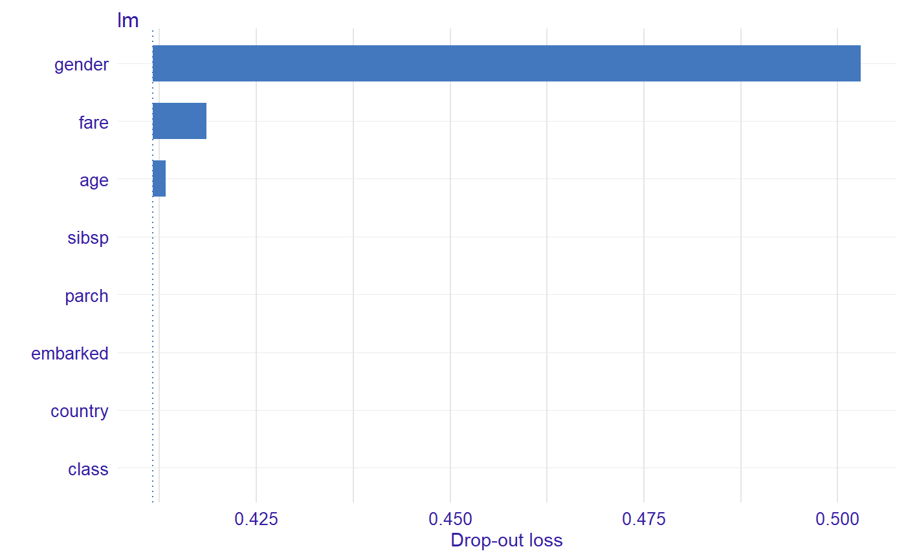
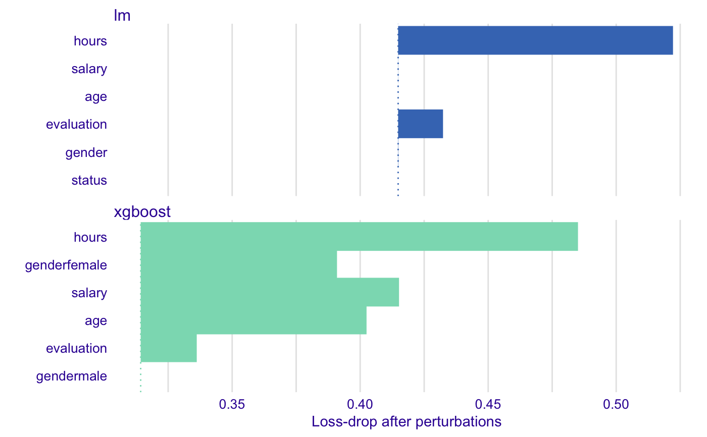
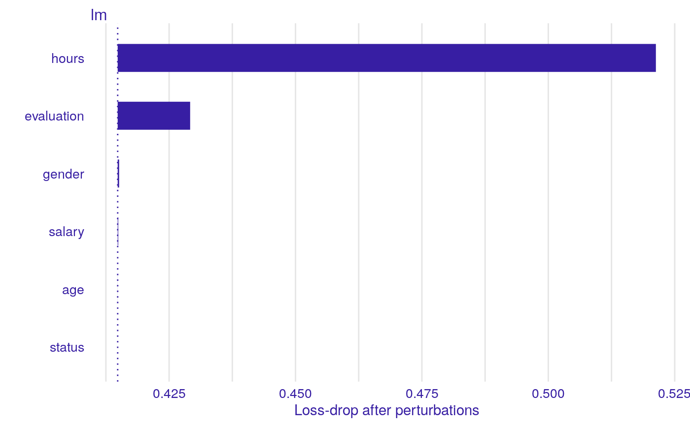
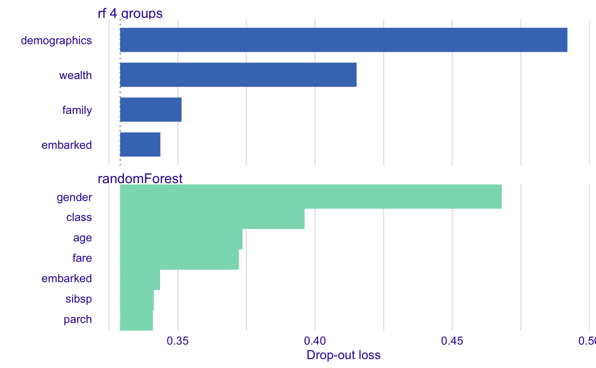
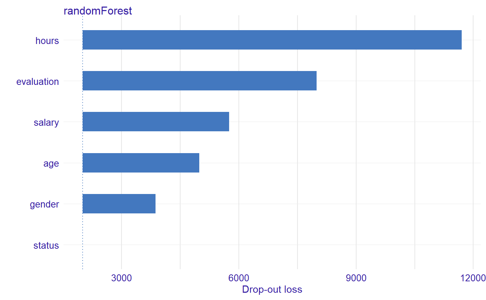
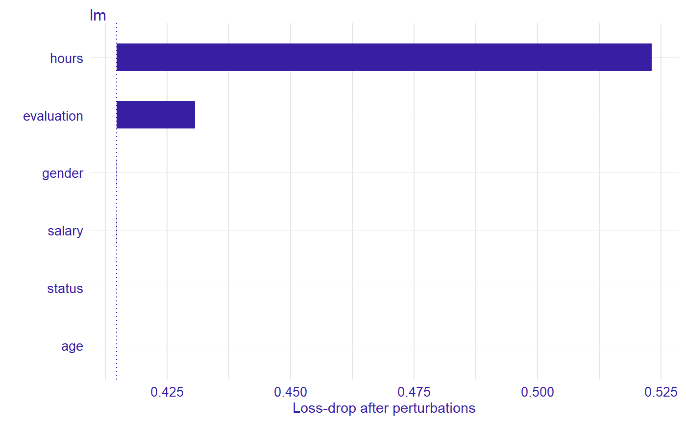
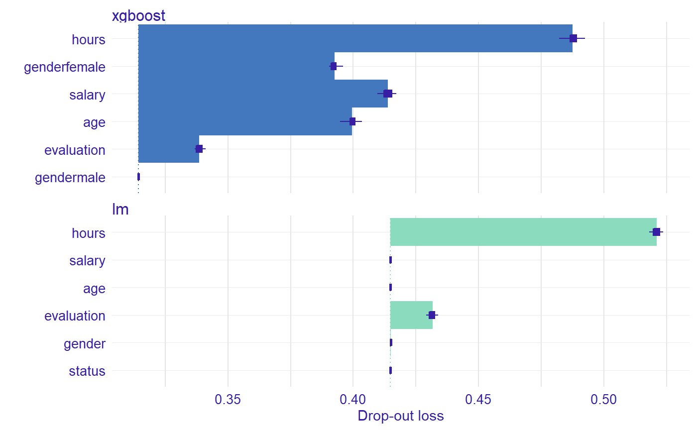

This function calculates permutation based feature importance. For this reason it is also called the Variable Dropout Plot.
feature_importance(x, ...) # S3 method for explainer feature_importance(x, loss_function = loss_root_mean_square, ..., type = c("raw", "ratio", "difference"), n_sample = NULL, B = 1, keep_raw_permutations = NULL, variables = NULL, variable_groups = NULL, label = NULL) # S3 method for default feature_importance(x, data, y, predict_function = predict, loss_function = loss_root_mean_square, ..., label = class(x)[1], type = c("raw", "ratio", "difference"), n_sample = NULL, B = 1, keep_raw_permutations = NULL, variables = NULL, variable_groups = NULL)
Arguments
| x | an explainer created with function |
|---|---|
| ... | other parameters |
| loss_function | a function thet will be used to assess variable importance |
| type | character, type of transformation that should be applied for dropout loss.
"raw" results raw drop lossess, "ratio" returns |
| n_sample | number of observations that should be sampled for calculation of variable importance.
If |
| B | integer, number of permutation rounds to perform on each variable |
| keep_raw_permutations | logical or |
| variables | vector of variables. If |
| variable_groups | list of variables names vectors. This is for testing joint variable importance.
If |
| label | name of the model. By default it's extracted from the |
| data | validation dataset, will be extracted from |
| y | true labels for |
| predict_function | predict function, will be extracted from |
Value
an object of the class feature_importance
Details
Find more detailes in the Feature Importance Chapter.
References
Predictive Models: Visual Exploration, Explanation and Debugging https://pbiecek.github.io/PM_VEE
Examples
library("DALEX") titanic <- na.omit(titanic) model_titanic_glm <- glm(survived == "yes" ~ gender + age + fare, data = titanic, family = "binomial") explain_titanic_glm <- explain(model_titanic_glm, data = titanic[,-9], y = titanic$survived == "yes")#> Preparation of a new explainer is initiated #> -> model label : lm (default) #> -> data : 2099 rows 8 cols #> -> target variable : 2099 values #> -> predict function : yhat.glm will be used (default) #> -> predicted values : numerical, min = 0.1483104 , mean = 0.3244402 , max = 0.9822194 #> -> residual function : difference between y and yhat (default) #> -> residuals : numerical, min = -0.8840083 , mean = 1.110794e-14 , max = 0.8437859 #> A new explainer has been created!vd_rf_joint1 <- feature_importance(explain_titanic_glm, variable_groups = list("demographics" = c("gender", "age"), "ticket_type" = c("fare")), label = "lm 2 groups", ) plot(vd_rf_joint1)vd_rf_joint2 <- feature_importance(explain_titanic_glm, variable_groups = list("demographics" = c("gender", "age"), "wealth" = c("fare", "class"), "family" = c("sibsp", "parch"), "embarked" = "embarked"), label = "lm 5 groups", ) plot(vd_rf_joint2, vd_rf_joint1)explain_titanic_glm#> Model label: lm #> Model class: glm,lm #> Data head : #> gender age class embarked country fare sibsp parch #> 1 male 42 3rd Southampton United States 7.11 0 0 #> 2 male 13 3rd Southampton United States 20.05 0 2library("randomForest") titanic <- na.omit(titanic) model_titanic_rf <- randomForest(survived == "yes" ~ gender + age + class + embarked + fare + sibsp + parch, data = titanic)#> Warning: The response has five or fewer unique values. Are you sure you want to do regression?#> Preparation of a new explainer is initiated #> -> model label : randomForest (default) #> -> data : 2099 rows 8 cols #> -> target variable : 2099 values #> -> predict function : yhat.randomForest will be used (default) #> -> predicted values : numerical, min = 0.01178198 , mean = 0.3244052 , max = 0.9919286 #> -> residual function : difference between y and yhat (default) #> -> residuals : numerical, min = -0.7737936 , mean = 3.50473e-05 , max = 0.8966971 #> A new explainer has been created!vd_rf_group <- feature_importance(explain_titanic_rf, variable_groups = list("demographics" = c("gender", "age"), "wealth" = c("fare", "class"), "family" = c("sibsp", "parch"), "embarked" = "embarked"), label = "rf 4 groups", ) plot(vd_rf_group, vd_rf)HR_rf_model <- randomForest(status~., data = HR, ntree = 100) explainer_rf <- explain(HR_rf_model, data = HR, y = HR$status, verbose = FALSE, precalculate = FALSE) vd_rf <- feature_importance(explainer_rf, type = "raw", loss_function = loss_cross_entropy) head(vd_rf)#> variable dropout_loss label #> 1 _full_model_ 2005.931 randomForest #> 2 status 2005.931 randomForest #> 3 gender 3868.208 randomForest #> 4 age 4989.332 randomForest #> 5 salary 5752.865 randomForest #> 6 evaluation 7995.928 randomForestplot(vd_rf)HR_glm_model <- glm(status == "fired"~., data = HR, family = "binomial") explainer_glm <- explain(HR_glm_model, data = HR, y = HR$status == "fired")#> Preparation of a new explainer is initiated #> -> model label : lm (default) #> -> data : 7847 rows 6 cols #> -> target variable : 7847 values #> -> predict function : yhat.glm will be used (default) #> -> predicted values : numerical, min = 0.00861694 , mean = 0.3638333 , max = 0.7822214 #> -> residual function : difference between y and yhat (default) #> -> residuals : numerical, min = -0.7755901 , mean = -1.294707e-13 , max = 0.9820537 #> A new explainer has been created!vd_glm <- feature_importance(explainer_glm, type = "raw", loss_function = loss_root_mean_square) head(vd_glm)#> variable dropout_loss label #> 1 _full_model_ 0.4148305 lm #> 2 status 0.4148305 lm #> 3 age 0.4148777 lm #> 4 salary 0.4150200 lm #> 5 gender 0.4150348 lm #> 6 evaluation 0.4311162 lmplot(vd_glm)library("xgboost") model_martix_train <- model.matrix(status == "fired" ~ . -1, HR) data_train <- xgb.DMatrix(model_martix_train, label = HR$status == "fired") param <- list(max_depth = 2, eta = 1, silent = 1, nthread = 2, objective = "binary:logistic", eval_metric = "auc") HR_xgb_model <- xgb.train(param, data_train, nrounds = 50) explainer_xgb <- explain(HR_xgb_model, data = model_martix_train, y = HR$status == "fired", label = "xgboost")#> Preparation of a new explainer is initiated #> -> model label : xgboost #> -> data : 7847 rows 6 cols #> -> target variable : 7847 values #> -> predict function : yhat.default will be used (default) #> -> predicted values : numerical, min = 1.687903e-06 , mean = 0.363713 , max = 0.9996712 #> -> residual function : difference between y and yhat (default) #> -> residuals : numerical, min = -0.9885727 , mean = 0.0001203497 , max = 0.9970635 #> A new explainer has been created!#> variable dropout_loss label #> 1 _full_model_ 0.3142729 xgboost #> 2 gendermale 0.3142729 xgboost #> 3 evaluation 0.3380996 xgboost #> 4 genderfemale 0.3929345 xgboost #> 5 age 0.4027214 xgboost #> 6 salary 0.4143046 xgboost